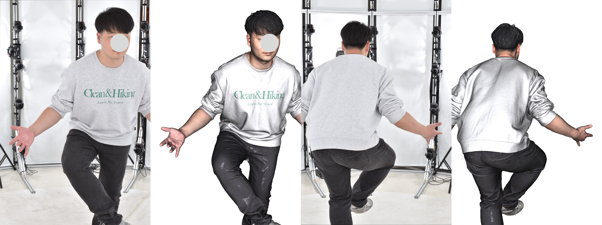
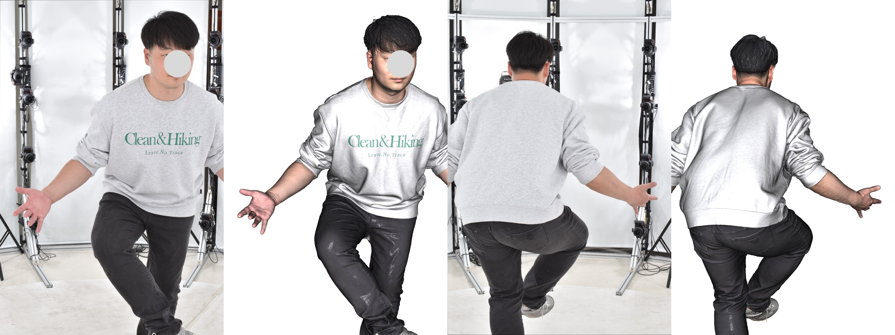
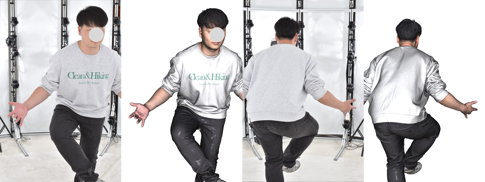

Detail View
 


Polygom present the first dataset of Korean body scan reconstructed by Multiview-Stereo with 130 DSLR system. The dataset contains high fidelity body scanS and correspondence 130 camera poses from SfM. The dataset is not publicly available but you can contact by E-mail (jseob.y@polygom.xyz, mpark@polygom.xyz)
Each mesh consists of 450k-500k vertices, 800k-1000k faces and 8192x8192 uv texture map. Unfortunately, subject IDs and pose IDs were not structured at data capture stage so exact statistics about data composition are not provided. Roughly 20-30 pre-selected poses are included.
Additionally, we will provide SMPLX template meshes fitted on our meshes

We are opened to discussion about data access and sharing. Feel free to contact by E-mail (jseob.y@polygom.xyz, mpark@polygom.xyz).